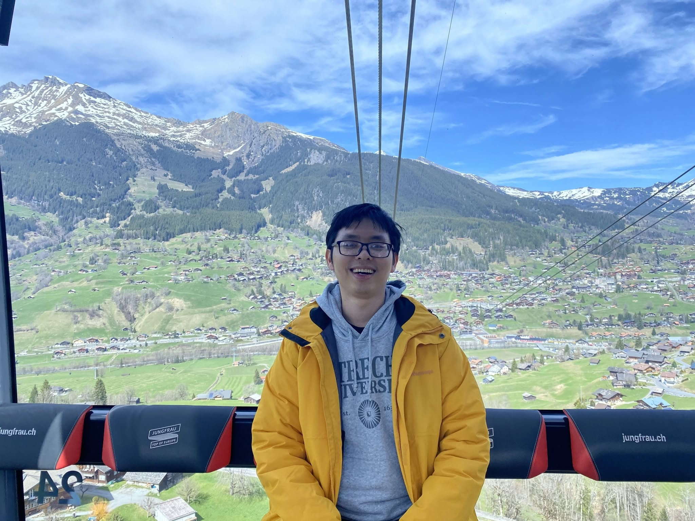

ThS. Kiến Minh Nguyễn Ngọc Quang
Nhà Trị liệu Thân chủ Trọng tâm
(+84) 98 1256 475

Trạng thái: Hiện tại tôi đang có lịch trống để tiếp nhận thân chủ mới.
Thông tin phiên & Chi phí
Thời lượng
Mỗi phiên kéo dài 50 phút.
Tần suất
Hàng tuần, mỗi hai tuần một buổi, hoặc theo nhu cầu của bạn.
Số lượng phiên
Linh hoạt theo nhu cầu. Bạn quyết định thời điểm kết thúc.
Phương thức
Trực tuyến qua Google Meet.
Chi phí mỗi phiên
* Hiện tại tôi có thể hỗ trợ mức phí này với tối đa 12 phiên cho 01 thân chủ.
Thực hành trị liệu
Khi trợ giúp các thân chủ có khó khăn tâm lý, tôi thực hành tiếp cận Trị liệu Thân chủ Trọng tâm (Client-Centered Therapy).
Tôi hướng đến việc hiện diện một cách chân thật, chấp nhận và thấu cảm với thân chủ. Tôi đón nhận, chú tâm lắng nghe và cố gắng hiểu được những cảm nhận cùng suy tư của bạn, đồng thời chủ động đặt qua một bên những đánh giá và phán xét.
Tôi hy vọng qua đó có thể mang lại cho bạn một không gian an toàn và tự do để bạn có thể trải nghiệm và sử dụng theo bất cứ cách nào thấy thích hợp với bản thân.
Những khó khăn từng trợ giúp
Tôi từng đồng hành cùng các thân chủ trải qua những khó khăn như:
- Căng thẳng kéo dài, kiệt sức (burnout), cảm giác chênh vênh
- Trầm buồn, lo âu, rối bời trong cảm xúc
- Cảm thấy tệ về bản thân, có xu hướng tự chỉ trích và phán xét chính mình
- Khó bày tỏ các cảm nghĩ và nhu cầu với người khác; luôn cố gắng làm hài lòng người khác (people-pleasing)
- Trục trặc hoặc bế tắc trong các mối quan hệ
- Khó chịu hoặc xung đột với hình ảnh cơ thể
- Mất mát, trải nghiệm sang chấn
- Hành vi tự gây thương tích và ý nghĩ tự sát
Đào tạo
Thạc sỹ về Tham vấn và Trị liệu Tâm lý
Đại học Strathclyde, Vương quốc Anh
Chương trình được chứng thực bởi Hiệp hội Tham vấn và Trị liệu Tâm lý Vương quốc Anh (BACP).
Thạc sỹ về Phát triển và Xã hội hoá ở Trẻ em và Thanh thiếu niên
Đại học Utrecht, Hà Lan
Cử nhân Tâm lý học Lâm sàng
Đại học Khoa học Xã hội và Nhân văn, Đại học Quốc gia Hà Nội, Việt Nam
Đạo đức & Giám sát
Khung đạo đức: Việc thực hành của tôi tuân thủ theo Khung đạo đức nghề nghiệp của BACP, phù hợp với bối cảnh văn hóa và xã hội Việt Nam.
Giám sát chuyên môn: Tôi thực hành dưới sự giám sát định kỳ của một nhà trị liệu có kinh nghiệm tại Vương quốc Anh nhằm duy trì phẩm chất và sự an toàn trong tiến trình trị liệu.